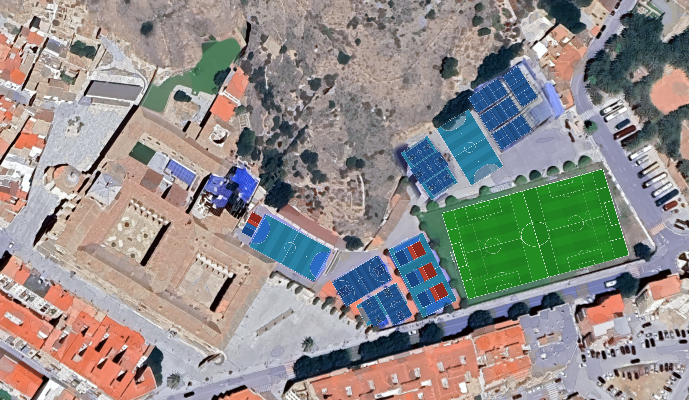

P1
Pádel 1
P2
Pádel 2
P3
Pádel 3
P4
Pádel 4
FS1
Fútbol Sala 1
FS2
Fútbol Sala 2
FS3
Fútbol Sala 3
FS4
Fútbol Sala 4
FS5
Fútbol Sala 5
B1
Baloncesto 1
B2
Baloncesto 2
M1
Minibasket 1
M2
Minibasket 2
M3
Minibasket 3
M4
Minibasket 4
V1
Voleibol 1
V2
Voleibol 2
V3
Voleibol 3
V4
Voleibol 4
F11
Fútbol 11 central
F8C
Fútbol 8 central
F8S
Fútbol 8 sur
F8N
Fútbol 8 norte
1
Iglesia
2
Consejería
3
Secretaría
4
Claustro del Convento
5
Patio de la Universidad
6
Patio de Juan XXIII
7
Patio de Lourdes
8
Tienda
9
Biblioteca
10
Gimnasio
11
Entrada al salón de actos
12
Comedor
13
Vestuarios
14
Almacén
Zonas del Colegio
▲
Pádel
— 4 pistas
Fútbol Sala
— 5 pistas
Baloncesto
— 2 pistas
Minibasket
— 4 pistas
Voleibol
— 4 pistas
Fútbol
— 4 campos
Edificios / Patios
1–14
23 pistas deportivas · 14 zonas edificio